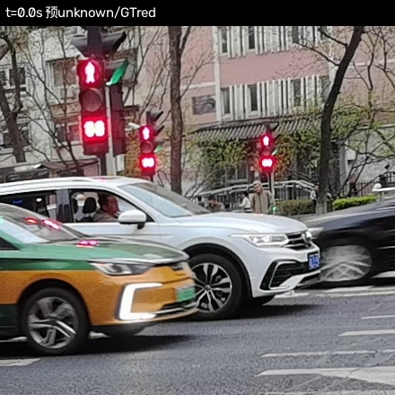
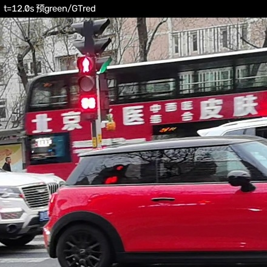
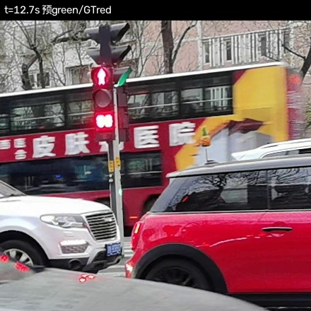
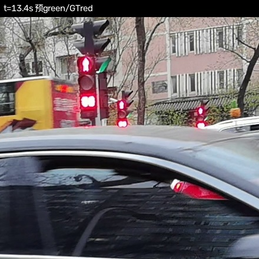
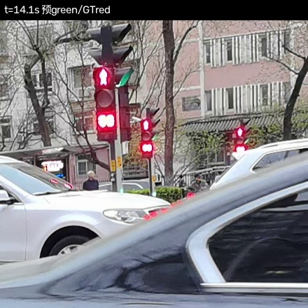
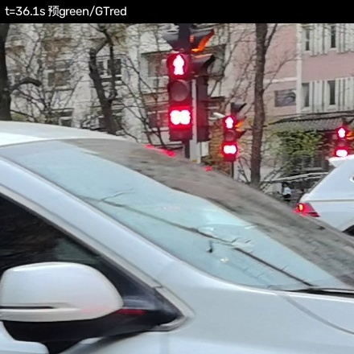
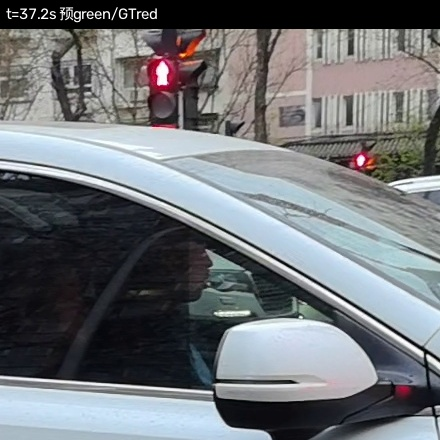
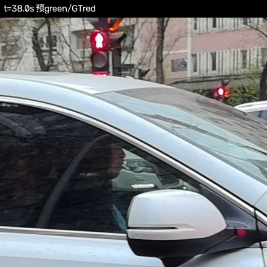
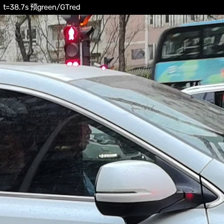
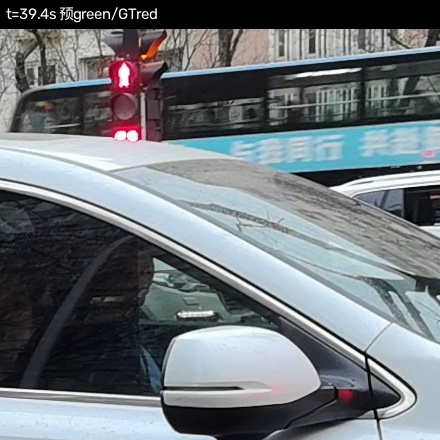

预测 unknown / GT red (g=0,r=0)

预测 green / GT red (g=316,r=7129)

预测 green / GT red (g=262,r=15532)

预测 green / GT red (g=262,r=15532)

预测 green / GT red (g=247,r=6099)

预测 green / GT red (g=125,r=8212)

预测 green / GT red (g=791,r=268)

预测 green / GT red (g=372,r=368)

预测 green / GT red (g=1061,r=1003)

预测 green / GT red (g=1255,r=1259)